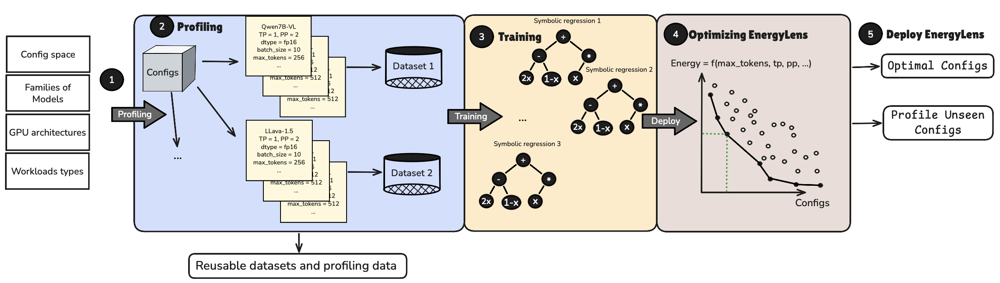
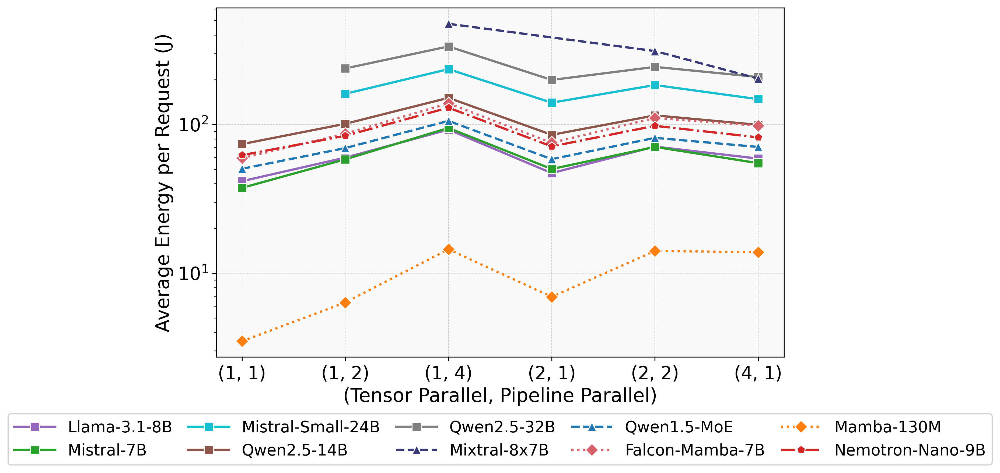
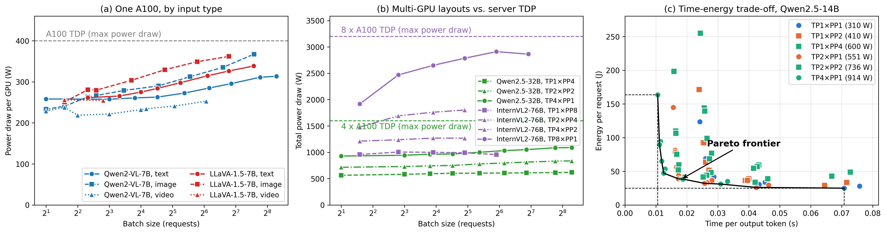
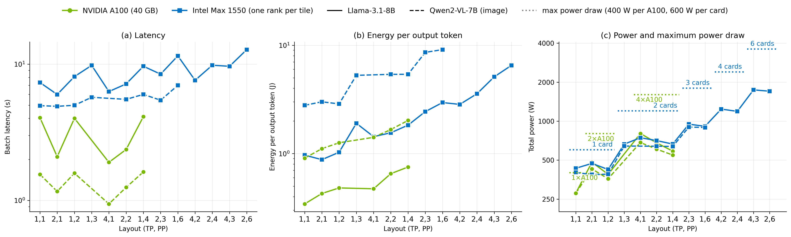
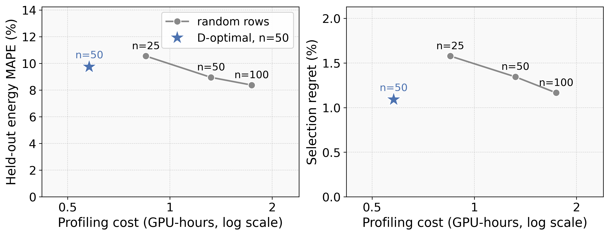

EnergyLens
Abstract
As large language models span dense, mixture-of-experts, and state-space architectures, execute on heterogeneous accelerators, and support multimodal workloads, optimizing inference energy becomes as important as optimizing latency and throughput. Existing methods either treat latency as an energy proxy or depend on data-hungry black-box surrogates. Both break down across parallelism strategies: once energy is charged to every GPU a configuration occupies, the latency- and energy-optimal configurations differ in 85.8% of our scenarios, and black-box models need hundreds of samples to become accurate.
We present EnergyLens, which uses symbolic regression to discover a reusable, parallelism-aware structural template for LLM inference energy; after this one-time discovery, the template is calibrated to a new model and workload by fitting twelve coefficients.
Across 29 datasets on NVIDIA A100, spanning text, image and video inputs, EnergyLens reaches 8.0% held-out MAPE from 50 measurements (Gradient Boosting: 26.7%) and selects configurations with 1.9% mean energy regret (MaverIQ: 4.2%). Its ranking survives withholding an entire parallelism configuration (90.2% pairwise accuracy, vs. 52.3% for Gradient Boosting). On real Azure inference traffic, 25 production batches suffice to bring its error to 4–10% on five models, where the baselines remain near 30%.
Introduction
Serving a model across several GPUs means choosing a layout: how many devices, and how to split the model between tensor parallelism (TP) and pipeline parallelism (PP). The choice changes energy by large factors, and the usual shortcuts pick the wrong layout.
- Latency is not a proxy for energy: the fastest layout and the lowest-energy layout differ in 86% of scenarios on A100, at 34.5% extra energy.
- Rated power is not a proxy either: on Intel GPU Max 1550, measured power is within 9% of the A100's, yet energy per token is 2.4–2.7× higher.
- Black-box surrogates need hundreds of measurements per model, and each one costs an engine reload.
Method
Symbolic regression over the profiling data discovers the structure of the energy formula once. Energy splits into a prefill and a decode term, each scaling with tokens over a sublinear function of batch size and with a separate exponent for TP and for PP, plus a fixed cost per device. For a new model, the twelve coefficients are fitted from about fifty measured batches, and the fitted formula ranks every layout.

Measurement
- NVIDIA: Zeus reads the NVML energy counter of every GPU the engine uses, around each batch.
- Intel: the Level Zero Sysman energy counters, read over the same window.
- A configuration is charged for all the devices it occupies.
Results




Explore the measurements
Each point is one layout serving the same batch. Points on the blue line are Pareto-optimal: no other layout is both faster and cheaper. Move the latency target to see which layout uses least energy while staying within k× of the fastest, and which one EnergyLens would pick from its 50-row fit.
All layouts for this batch
Dataset
Every measured batch is released: about 92,000 rows over 18 models, two GPU vendors, four modalities and five weight formats, plus a day of replayed Azure traffic. Rows that fail a validity check are kept and flagged.
import pandas as pd
grid = pd.read_parquet("grid.parquet") # python data/build_dataset.py
grid = grid[grid.valid]
grid.groupby(["hardware", "model", "tensor_parallel_size", "pipeline_parallel_size"]).energy_per_output_token.median()
Conclusion
A structure discovered once by symbolic regression, then calibrated with twelve coefficients, predicts LLM inference energy across parallelism layouts, model families, modalities, precisions and GPU vendors from about fifty measurements, and picks layouts within a few percent of the optimum where latency- and power-based shortcuts do not.
BibTeX
@inproceedings{energylens,
title = {EnergyLens: Interpretable Closed-Form Energy Models for Multimodal LLM Inference Serving},
author = {Anonymous},
booktitle = {Under review},
year = {2026}
}